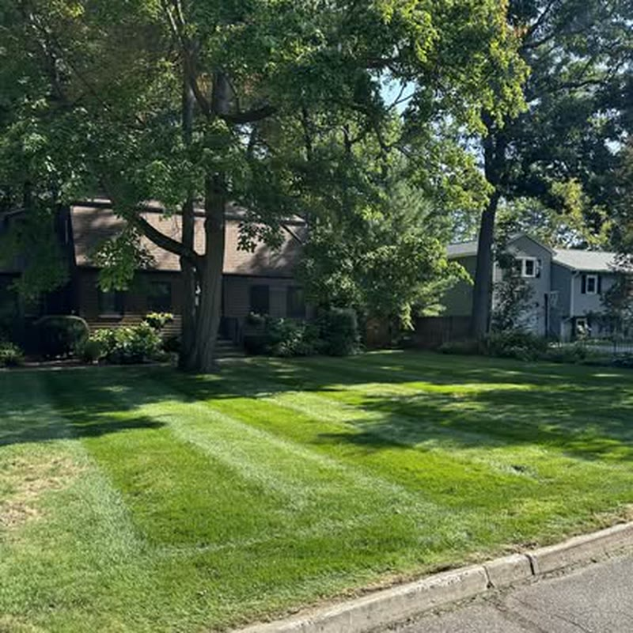
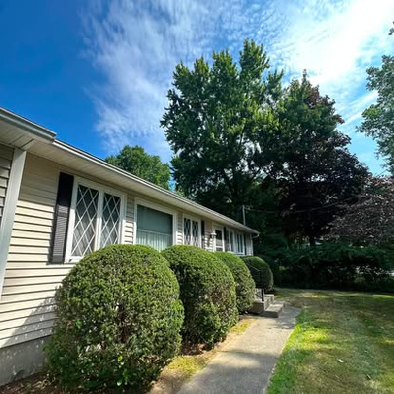
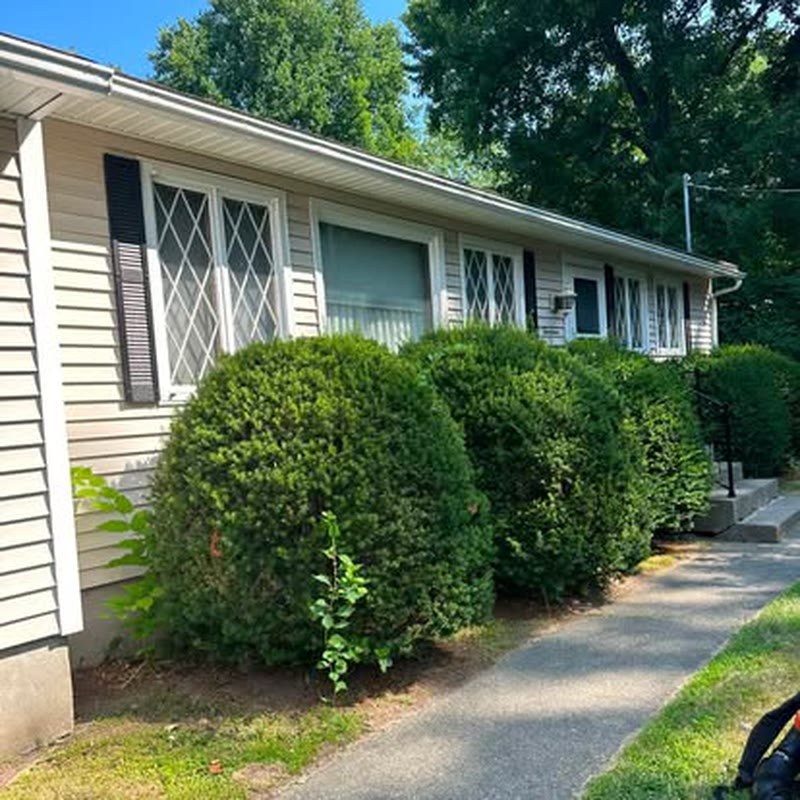
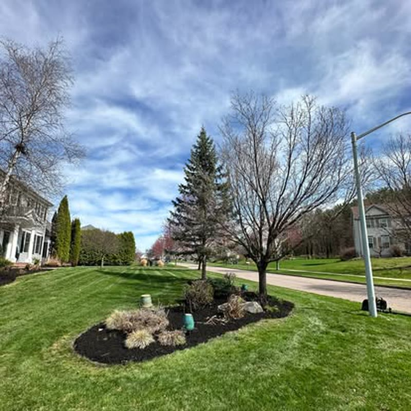
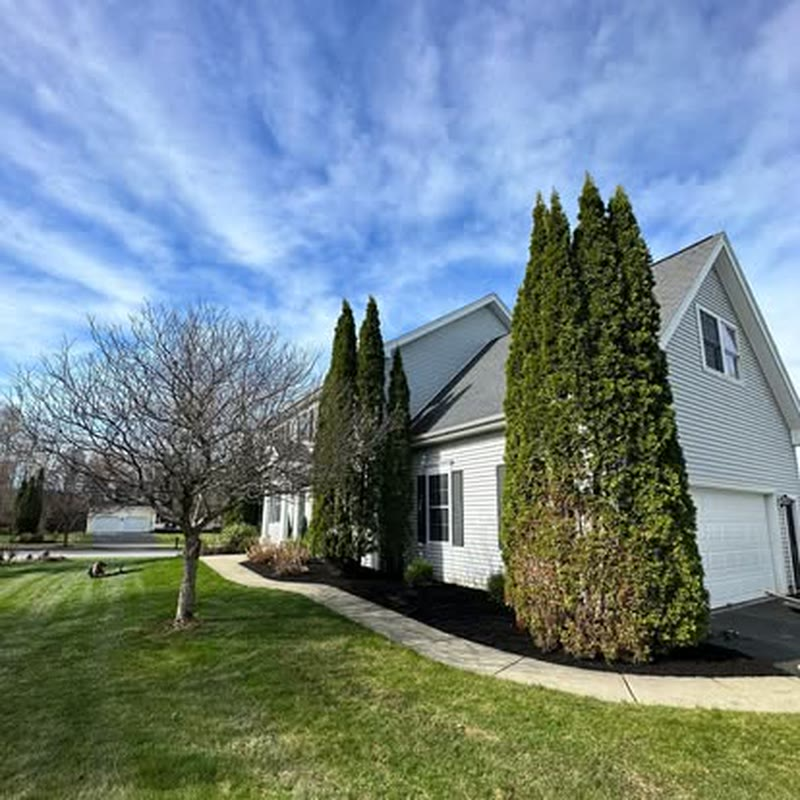
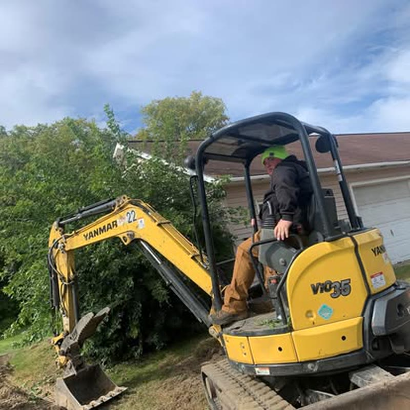
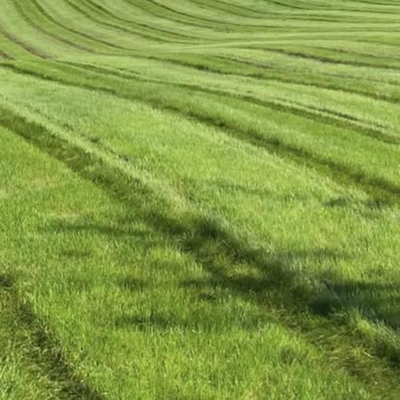
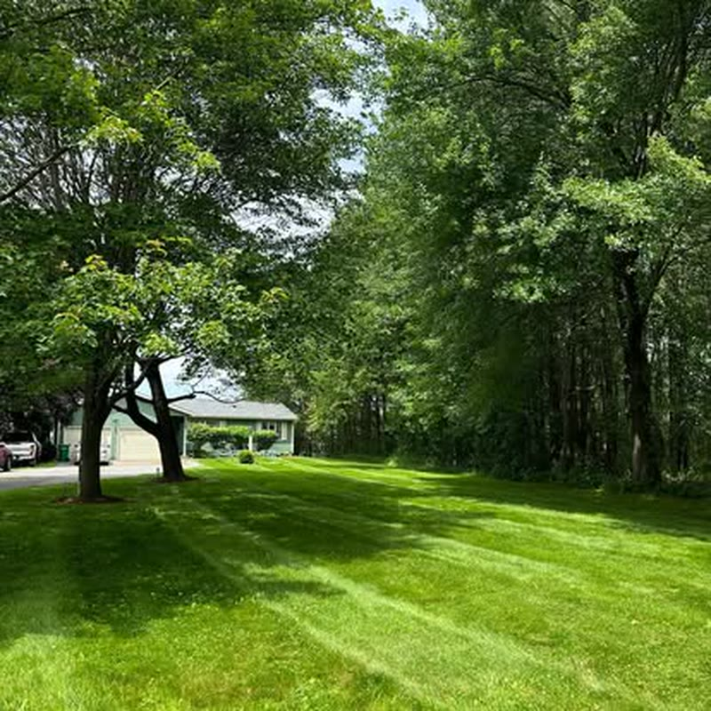

Every photograph below is Callahan Landscaping's own, from their Facebook
page. Nothing here is a stock photo and nothing is generated.
Large open lawn, cut in alternating passes.Residential front lawn, stripes held to the walk.Cut and trimmed around foundation plantings.Stripes run the full length of the property.Beds edged, lawn cut to the bed line.Back lawn, cut height set for the season.

Street frontage kept square to the curb.

Foundation shrubs shaped and held to size.

Hedge line kept off the siding and the walk.

Bed cleared, edged and mulched flat.

Mulch run tight against a curved bed edge.

Excavator on site for heavier ground work.

Commercial frontage on a regular rotation.

Open ground under mature trees.
Photographs are Callahan Landscaping's own.
In motion
Three short loops, generated from Callahan's own cover photograph —
camera movement only, nothing added to the scene.
Stripes Alternating passes, held straight across the full run.Open ground Large properties on a consistent cut height.Spring First cuts once the ground firms up.